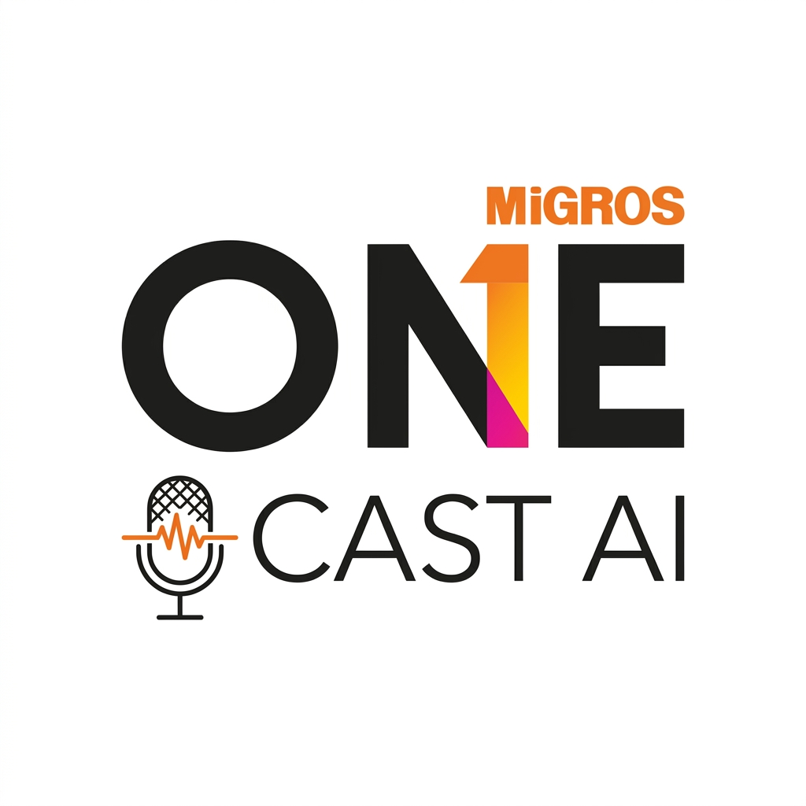
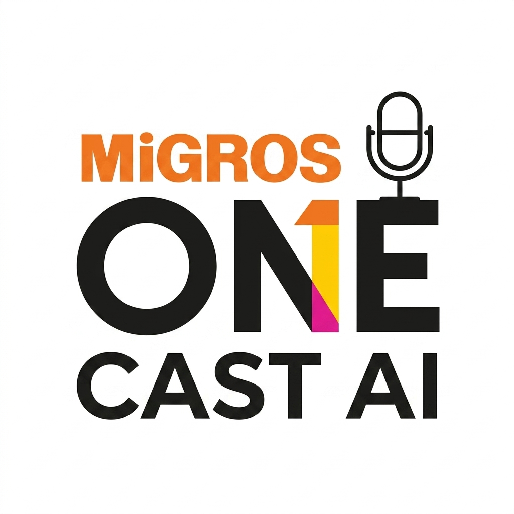
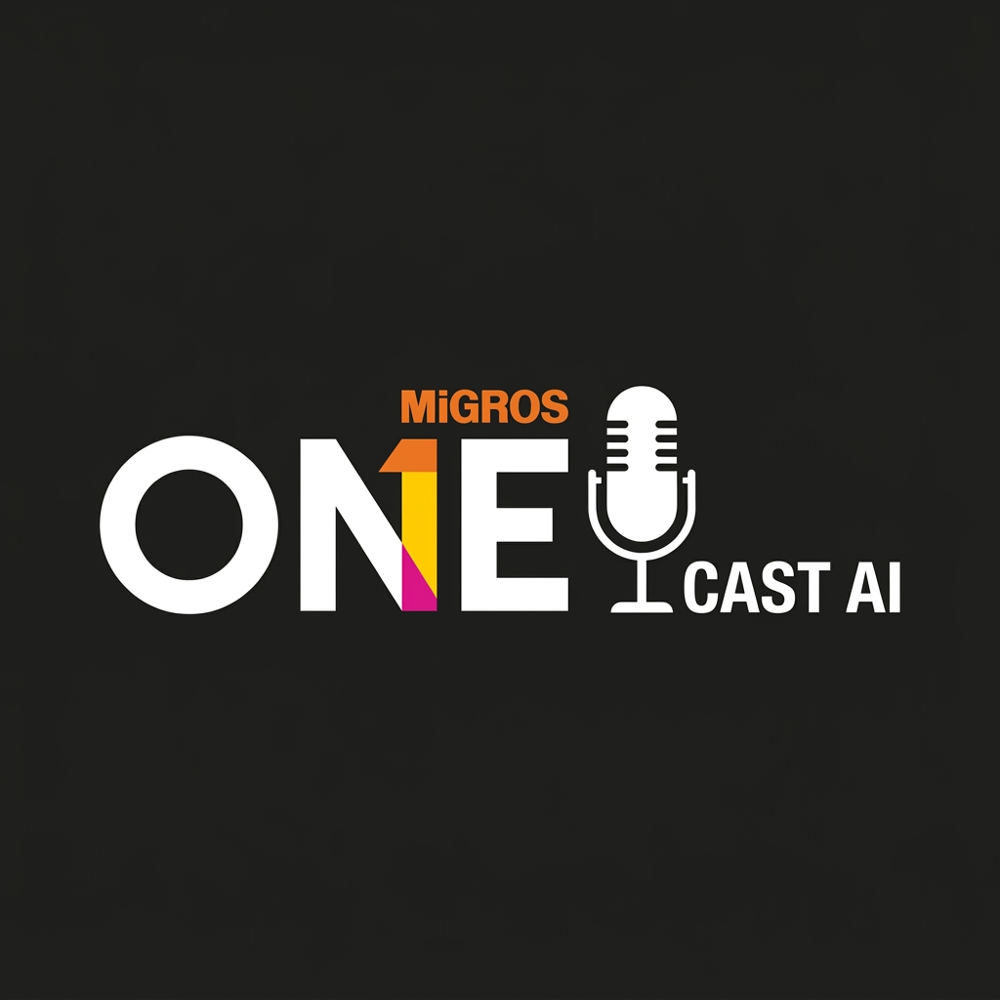

Orijinal kurumsal sadelik, net tipografi ve minimalist mikrofon entegrasyonu

Beyaz zemin üzerinde eksiksiz logo, 'O' harfinin altında ses dalgalı zarif mikrofon ikonu ve 'CAST AI'.

Net beyaz arka plan, 'E' harfinin üzerinde minimalist stüdyo mikrofonu ve 'CAST AI' tipografisi.

Düz mat siyah zemin, beyaz 'ONE' yazısı ve yanında sade beyaz stüdyo mikrofonu silüeti.